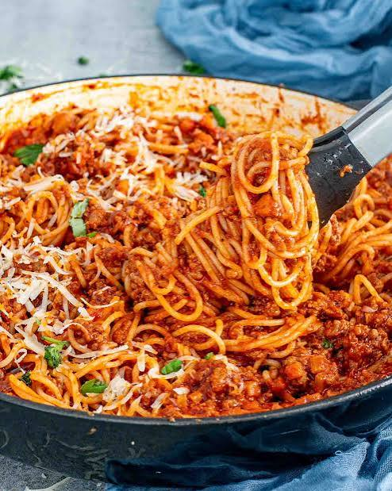

Spaghetti Bolognese

Description
Spaghetti Bolognese is a comforting pasta dish served with a rich tomato and ground-beef sauce. The sauce is seasoned with garlic, onion, and Italian herbs.
Ingredients
- 12 ounces spaghetti
- 1 pound ground beef
- 1 tablespoon olive oil
- 1 small onion, chopped
- 2 cloves garlic, minced
- 1 can crushed tomatoes
- 2 tablespoons tomato paste
- 1 teaspoon dried oregano
- 1 teaspoon dried basil
- ½ teaspoon salt
- ¼ teaspoon black pepper
- Grated Parmesan cheese
Steps
- Cook and drain the spaghetti.
- Cook the onion and ground beef in a pan.
- Add the tomatoes and simmer for 15 minutes.
- Serve the sauce over the spaghetti.
Home.